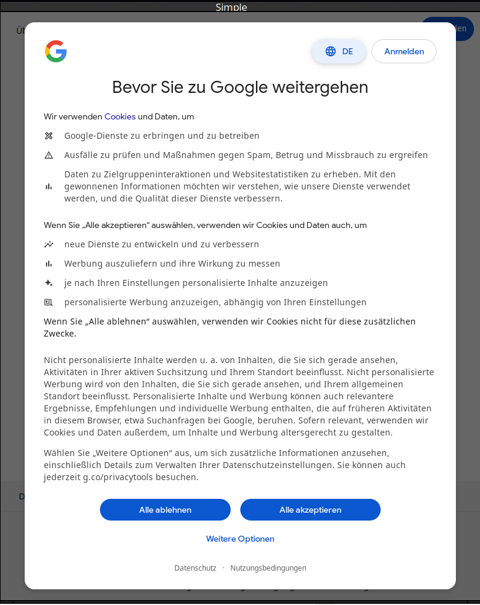
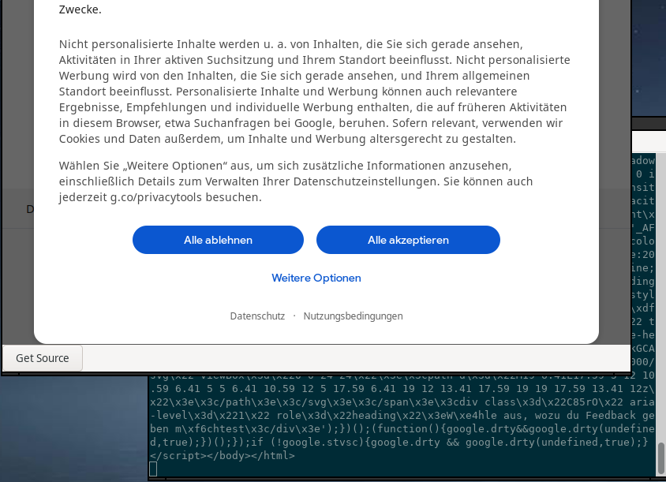

What
My Python + Selenium Web-Scraper requires Chrome, ChromeDriver, Python, xvfb (X11 virtual frame buffer) and a bunch of hacks for hidden headless mode. I want something small, efficient, fast and low dependency that I can run on as Raspberry Pi or on AWS Lambda (with binary size limit). For this I need something that can render a webpage and also execute the Java-Script embedded in it. I also need to to have the ability to inject Java-Script code, so I can click away cookie-banners, fill out HTML forms and click submit automatically.
Most browsers use WebKit underneath. Apple’s Safari and also Chrome used to use it. In order to use WebKit we need a graphical user interface toolkit. Qt is relatively large. So I’ll go with wxWidgets.
Contents
Contents
When
Many of my hobbyist projects rely on scraping the web for data. Be it real estate listings, stock market prices or news aggregation.
It used to be possible to just connect a TCP socket to port 80, manually craft a GET request and send it off. Nowadays we need SSL encryption and key exchange schemes. Since Web 2.0 we often need to execute JavaScript code for the pages to even display the content we’re after. Then there are advertisements and coockie accept banners that need to be automatically clicked.
For this we need to run full browsers. In the past I’ve orchestrated Firefox or Chrome using the Python Selenium libraries. A more efficient method is to run smaller embedded browsers from C++ code and get much of the same features by injecting JavaScript, as I’ll show in the following.
Background
Background
Most web scrapers use Python and Selenium. This is find and a realively simple approach for the developer. It comes with a performance hit and requires a lot of dependencies. This also makes it unstable, when underlying software gets updated.
Old Approach: Python + Selenium
When scrapping data with Python this is what I used to do:
# -- working headless mode by running in virtual frame buffer Xvfb
display = Display(visible=0, size=(1920, 1080))
display.start()
# -- some covert options to hide selenium
options = webdriver.ChromeOptions()
options.add_argument("--disable-blink-features=AutomationControlled")
options.add_experimental_option("excludeSwitches", ["enable-automation"])
options.add_experimental_option("useAutomationExtension", False)
# -- add UBlock Origin Extension to remove full-page ad-bloat that hinders
extraBrowserExtension = "<path to ublock origin extension for this spectic browser (*.crx file)>"
options.add_extension(extraBrowserExtension)
# -- load Chrome
driver = webdriver.Chrome(options=options)
# -- some more covert options
driver.execute_script("Object.defineProperty(navigator, 'webdriver', {get: () => undefined})")
useragent = [
"Mozilla/5.0 (Windows NT 10.0; Win64; x64) AppleWebKit/537.36 (KHTML, like Gecko) Chrome/108.0.0.0 Safari/537.36"]
driver.execute_cdp_cmd(
"Network.setUserAgentOverride", {"userAgent": useragent}
)
stealth(driver,
languages=["en-US", "en"],
vendor="Google Inc.",
platform="Win32",
webgl_vendor="Intel Inc.",
renderer="Intel Iris OpenGL Engine",
fix_hairline=True,
)
driver.execute_cdp_cmd("Page.addScriptToEvaluateOnNewDocument", {
"source": """
Object.defineProperty(navigator, 'webdriver', {
get: () => undefined
})
"""
})
Then load a page
# -- open url
driver.get(grab_url)
Using my helper functions to get the page body and HTML elements, when they are finally loaded:
def webdriver_find_element(driver, root, cssSelector):
for i in range(5):
try:
element = root.find_element(By.CSS_SELECTOR, cssSelector);
return element
except NoSuchElementException:
time.sleep(0.5)
print("timeout waiting for cookie accept")
def webdriver_get_html_element_body(driver):
return WebDriverWait(driver, 5).until(EC.element_to_be_clickable((By.TAG_NAME, "body")))
Get the page, get subelements by CSS selectors, inject javascript to change attributes and click on elements.
# -- get html body
html_element_body = webdriver_get_html_element_body(driver)
# - get inner div
html_element_table = webdriver_find_element(driver, html_element_body, "main[class='page-content']")
(..)
# -- inject javascript
driver.execute_script("arguments[0].setAttribute('value', '" + date_start +"')", html_element_dtDate1);
(..)
# -- click submit
html_element_submit.click()
and finally extract the results
# -- extract information
print(html_element.get_attribute('outerHTML'))
That runs fine, but is slow and requires a lot of dependencies to be installed.
How
Choice of Tools
So in order to stream-line that in C++ we need to first think about what C++ libraries we can use to achieve our goals.
Browser Engines
Most browsers nowadays use some form of WebKit underneath. Safari uses WebKit. The Chrome Engine is also based on WebKit. Firefox has transitioned to Chrome, thereby also settling for WebKit.
It’s far too challenging to write a custom rendering engine and to keep it compatible with all the features the modern web contains. As mentioned above encryption and JavaScript execution is also required. So a good choice is to use WebKit.
Graphics User Interface library
Even though the code is intended to run automatically and headless (hidden window), we need some framework to run WebKit in. My first impuls was to use Qt, my second was GTK, but then I remembered wxWidgets. It’s an older, smaller graphical user interface. It can be built statically. It has a WebKit integration called wxWebView.
Implementation
With the choice of tools out of the way we can start building our application in C++ with wxWidgets and Webkit.
wxWidgets Example Window
First let’s get an example [1] off the ground.
I’ll copy the example code into a single source code file, main.cpp, for now. Later I’ll transfer most of it to a functional/procedural-style and get rid of the classes. That will make the code way more portable and useful for our web scraping purposes.
#include <wx/wx.h>
class Simple : public wxFrame {
public:
Simple(const wxString& title);
};
Simple::Simple(const wxString& title)
: wxFrame(NULL, wxID_ANY, title, wxDefaultPosition, wxSize(250, 150)) {
Centre();
}
class MyApp : public wxApp
{
public:
virtual bool OnInit();
};
IMPLEMENT_APP(MyApp)
bool MyApp::OnInit()
{
Simple *simple = new Simple(wxT("Simple"));
simple->Show(true);
return true;
}
Let’s see what the compile says, if we try to build it without specifying the depedencies.
g++ main.cpp -o main
Similar to pkg-config, there is a wx-config tool that returns the library paths.
We can add --static=yes, if we have a wxWidgets version that is statically built. This is something to remember for later.
The version installed from the Ubuntu repositories is
wx-config --version
3.2.4
For now this will do:
g++ `wx-config --libs` `wx-config --cxxflags` main.cpp -o main
That yields a host of undefined references. Of coursse the packages in the Ubuntu repositories are once again somehow built incorrectly
undefined reference to `wxString::FromAscii(char const*)'
Compile wxWidgets ourselves
Luckily we can easiliy compile wxWidgets ourselves. This will also be useful for a static compile later on.
wget https://github.com/wxWidgets/wxWidgets/releases/download/v3.3.1/wxWidgets-3.3.1.tar.bz2
tar -xvf wxWidgets-3.3.1.tar.bz2
echo "wxWidgets-3.3.1.tar.bz2" >> .gitignore
echo "wxWidgets-3.3.1/" >> .gitignore
echo "main.o" >> .gitignore
echo "main" >> .gitignore
cd wxWidgets-3.3.1/
mkdir _build/ && cd _build/
../configure --with-gtk=3 --with-opengl
Configured wxWidgets 3.3.1 for `x86_64-pc-linux-gnu'
Which GUI toolkit should wxWidgets use? GTK+ 3 with support for GTK+ printing libnotify
Should wxWidgets be compiled into single library? no
Should wxWidgets be linked as a shared library? yes
Unicode encoding used by wxString? UTF-32
What level of wxWidgets compatibility should be enabled?
wxWidgets 3.0 no
wxWidgets 3.2 yes
Which libraries should wxWidgets use?
jpeg sys
png sys
regex sys
tiff sys
webp sys
lzma no
zlib sys
expat sys
libmspack no
sdl no
webview yes (with backends: WebKit)
Make sure webview is enabled.
make -j3
Build the sample and run it
cd wxWidgets-3.3.1/_build/samples/minimal
make
./minimal
Compile Flags
By building with
make -n
Creating a Makefile for our code with a copy of the same settings, replacing minimal with main,. removing some of the excess and introducing a variable for the path to wxWidgets yields an extremly long command-line.
It’s much easier to use the wx-config tool:
all:
g++ -std=c++11 -Wall -o main main.cpp `./wxWidgets-3.3.1/_build/wx-config \
--debug=yes --libs std,aui,stc --unicode=yes --cxxflags --libs`
We can now run our sample code the same
make
./main
Procedural Style
As mentioned above, I’ll keep this procedural.
However there is a wxWidgets macro used that expects a class name to be given that runs some of the initialisation, e.g. gdk_init().
IMPLEMENT_APP(MyApp)
Luckily there are ways to initialize wxWidgets without that macro. This code is functionally identical to the object-oriented version. 7 lines instead of 17 to spawn the window.
#include <wx/wx.h>
int main(int argc, char** argv) {
wxApp::SetInstance(new wxApp());
wxEntryStart(argc, argv);
wxTheApp->CallOnInit();
wxFrame * frame = new wxFrame(NULL, wxID_ANY, "Simple", wxDefaultPosition, wxSize(250, 150));
frame->Show(true);
wxTheApp->OnRun();
return 0;
}
WebKit
First we add the webkit and html libraries for wxWidgets.
all:
g++ -std=c++11 -Wall -o main main.cpp `./wxWidgets-3.3.1/_build/wx-config \
--debug=yes --libs std,aui,stc,webview,html --unicode=yes --cxxflags --libs`
and change the code to this:
#include <wx/wx.h>
#include <wx/webview.h>
int main(int argc, char** argv) {
wxApp::SetInstance(new wxApp());
wxEntryStart(argc, argv);
wxTheApp->CallOnInit();
wxFrame * frame = new wxFrame(NULL, wxID_ANY, "Simple", wxDefaultPosition, wxSize(800, 1000));
frame->Show(true);
wxPanel* panel = new wxPanel(frame);
wxBoxSizer* sizer = new wxBoxSizer(wxVERTICAL);
wxWebView * webView = wxWebView::New(panel, wxID_ANY, "https://www.google.com");
sizer->Add(webView, 1, wxEXPAND | wxALL, 0);
panel->SetSizer(sizer);
wxTheApp->OnRun();
return 0;
}
For wxWebView to run on NVidia drivers we need to add an environment variable [4]:
make && WEBKIT_DISABLE_DMABUF_RENDERER=1 ./main
and with that WebKit runs, can open a URL and displays one of the cookie popups.
Injecting JavaScript
In order to click on cookie banner accept buttons, fill out HTML forms and click on submit we need to inject JavaScript code.
This is easy to achieve using the RunScript function of wxWebView.
webView->RunScript("javascript:(function() { alert('hi');})()");
Getting Page Source
We can get the page html source with
#include <iostream>
(..)
std::cout << webView->GetPageSource().utf8_str() << std::endl;
The problem we encounter now is that the page may not have been loaded yet.
Threads and Blocking Calls
So we need to delay getting the page source. This requires some thought, because the current thread is busy rendering the web page.
Loops
We can’t just add a while(true) loop as that would block wxWebView from loading the page.
while(true) {
std::cout << "[ ] source: " << webView->GetPageSource().utf8_str() << std::endl;
std::this_thread::sleep_for(std::chrono::seconds(5));
}
C++ Timer
We might consider making the webView pointer global and spawning a thread as a simple timer.
std::thread timeoutThread([&]() {
while(true) {
std::this_thread::sleep_for(std::chrono::milliseconds(1500));
std::cout << "." << std::endl;
std::cout << webView->GetPageSource() << std::endl;
}
});
This however locks the thread after the first call to GetPageSource, likely because we are calling a wxWidget widget asynchronously bypassing the event system and run into a lock within the framework.
wxButton
As a quick test we can try wiring a Button:
void OnButton(wxCommandEvent& event) {
std::cout << "button" << std::endl;
std::cout << webView->GetPageSource() << std::endl;
}
int main(int argc, char** argv) {
(...)
wxButton * button = new wxButton(panel, wxID_ANY, "Get Source");
sizer->Add(button, 0, wxALL, 0);
button->Bind(wxEVT_BUTTON, &OnButton);
(...)
}
That works great (see html source in the console in the background). But we’d have to manually click a button each for each iteration.
wxTimer
The solution for non-blocking retrieval of the page source with a timer is to use the timer built into wxWidgets. After figuring out the calling sequence and syntax I ended up with this:
wxWebView * webView;
void OnTimer(wxTimerEvent& event) {
std::cout << webView->GetPageSource() << std::endl;
}
int main(int argc, char** argv) {
(...)
const int TIMER_INTERVAL = 500;
wxTimer * timer = new wxTimer(panel, wxID_ANY);
panel->Bind(wxEVT_TIMER, &OnTimer);
timer->Start(TIMER_INTERVAL, wxTIMER_CONTINUOUS);
(...)
}
and that works as expected. Every 500ms the page source is retrieved and dumped to the console.
For lack of an easy way to get user data through the event I went with a global pointer to the wxWebView instance.
Automation
From here the rest is a matter of monitoring the incoming page source for the presence of tokens and injecting JavaScript accordingly.
Converting wxString to std string
In order to use my stringCompare, stringReplace, stringContains functions that all operate on std::string we need to convert from wxString to std::string:
wxString html_wx = m_webView->GetPageSource();
const char * c = static_cast<const char*>(html_wx.ToUTF8());
std::string s(c);
Accepting the Cookie Banner
In order to get rid of the cookie banner we need to automatically click the “accept” button.
We can have a look at the “I Still Don’t Care About Cookies” [6] browser extension and inject similar JavaScript code.
The following code works perfectly to auto-click on “accept”.
if(stringContains(s, ">Alle akzeptieren</div>")) {
std::cout << "[!] Cookie Accept Button Found" << std::endl;
// ---
const char * javascript = R""""(
function _sl(selector, container) {
return (container || document).querySelector(selector);
}
const container = _sl('div[aria-modal="true"][role="dialog"]');
_sl("button + button", container).click();
)"""";
// ---
wxString javascript_wx(javascript);
m_webView->RunScript(javascript_wx);
}
Progress
Conclusion
With wxWdigets + wxWebView in C++ we can build a simple JavaScript capable web scrapper that runs fast and efficiently. JavaScript code can be injected and we could easily run advanced image recognition on screenshots of the wxWebView widget and trigger mouse and keyboard events. That is really all that is needed in most cases in order to efficiently scrape data from the web from C++, in a cross-platform way, with minimal amount of code.
1] https://zetcode.com/gui/wxwidgets/firstprograms/ 2] https://stackoverflow.com/questions/22406511/how-compiling-wxwidgets-app-staticaly 3] https://stackoverflow.com/questions/208373/wxwidgets-how-to-initialize-wxapp-without-using-macros-and-without-entering-the 4] https://github.com/tranxuanthang/lrcget/issues/54 5] https://docs.wxwidgets.org/latest/classwx_string.html 6] https://github.com/OhMyGuus/I-Still-Dont-Care-About-Cookies/blob/master/src/data/js/8_googleHandler.js